1 • Abstract
This research explores the creative potential of wood offcuts from the Koninklijke Academie van Beeldende Kunsten (KABK) workshop in The Hague. It extends digital cropping logic into physical space, investigating whether material leftovers can initiate creative processes instead of ending them. Drawing on Tim Ingold’s correspondence between maker and material, Claude Lévi-Strauss’s bricoleur, and Karel Martens’s process-led practice, the study critiques the “polished system” of workshop and design culture. Offcuts appear not as waste, but as materials with unique surfaces, edges, and process traces ready for activation.
Through collecting offcuts, arranging them spatially, and running a collaborative KABK workshop, the research activates their graphic potential through selection, placement, and attention. Tracing and frottage demonstrate that creativity derives from maker-material correspondence; working with limitations sharpens focus and unlocks unexpected design outcomes.
2 • Introduction
Making, then, is a process of correspondence: not the imposition of preconceived form on raw material substance, but the drawing out or bringing forth of potentials immanent in a world of becoming. In the phenomenal world, every material is such a becoming, one path or trajectory through a maze of trajectories.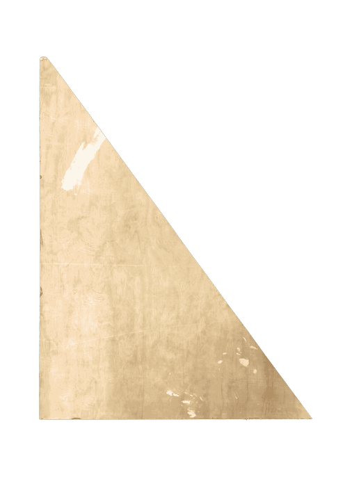
Tim Ingold, Making: Anthropology, Archaeology, Art and Architecture (London: Routledge, 2013), 31.My practice begins with cropping. There is no image I leave untouched — I zoom in, cut away, isolate. What interests me is not the whole, but what the frame reveals when it shifts: a texture, a fragment, an edge that was never meant to be seen. In digital environments, what is cut away often disappears without leaving a trace. This habit of looking led me out of the screen and into the wood workshop at the Koninklijke Academie van Beeldende Kunsten (KABK) in The Hague, where offcuts accumulate in corners and containers. I recognised something there. The workshop's leftover area operates like a crop: it holds what the system has cut away.
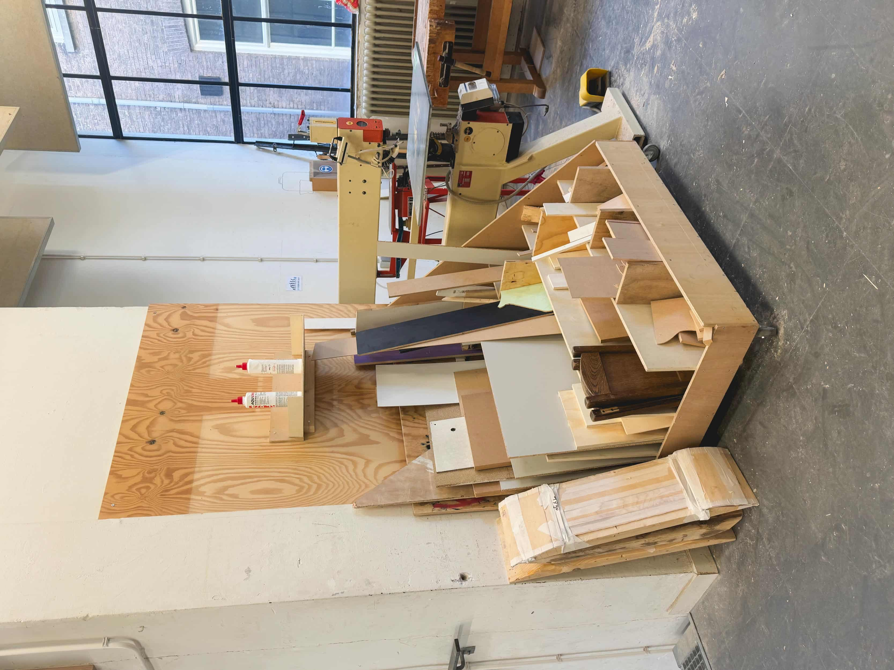
I am holding a scrap of wood. Irregular edges, a rough surface, a shape that was never intended. It is what remains after something else was made. As a result, leftovers are overlooked. And yet, when held in my hands and looked at closely, it carries something: a texture, a form, a visual quality that no computer could generate and no designer could plan.
By “polished system” I mean a design culture that favours clean, clear, and finished results. In the wood workshop, I came to recognise this in the preference for materials that can be used quickly, measured easily, and brought to an intended outcome efficiently. It is a logic in which things are designed, produced, standardised, and in which smoothness, efficiency, and resolution play a central role.
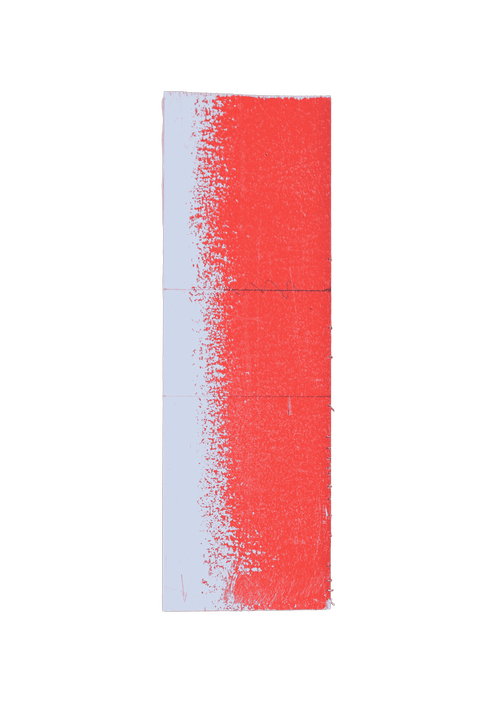
Beatriz Colomina and Mark Wigley, Are We Human? Notes on an Archaeology of Design (Zürich: Lars Müller Publishers, 2016), 89. It defines what counts as a finished object and, in doing so, pushes everything else towards the margins.By thinking about this “polished system,” I began to view at the wood workshop not as a neutral space but as one formed by its own conditions and expectations. As I experienced it, it often favoured processes that were clear, efficient, and directed towards a result within a limited timeframe. Within this rhythm, materials that could be used quickly and unambiguously seemed to take precedence, while irregular offcuts asked for something else: more time, more interpretation, and more uncertainty. In that sense, they did not move as easily within the logic that surrounded them.
This is precisely where my interest begins: I engage with process and question what if the remains are not the end of a process, but the beginning of one? I feel that working with discarded materials means questioning the logic that produced them. This research takes offcuts as the starting point, giving them a role again while asking whether material leftovers can have new meaning and whether we can use them for creative output.
3 • Context and Background
In 2022, I encountered the work of Karel Martens for the first time during the conference "Making Books Together" with "Love, Friends and Hard Work” at the Koninklijke Academie van Beeldende Kunsten. In Martens’s work I notice a playful approach: working with found forms and recycled materials, thinking through printing in a hands-on way, and allowing the process to unfold without a fixed plan.
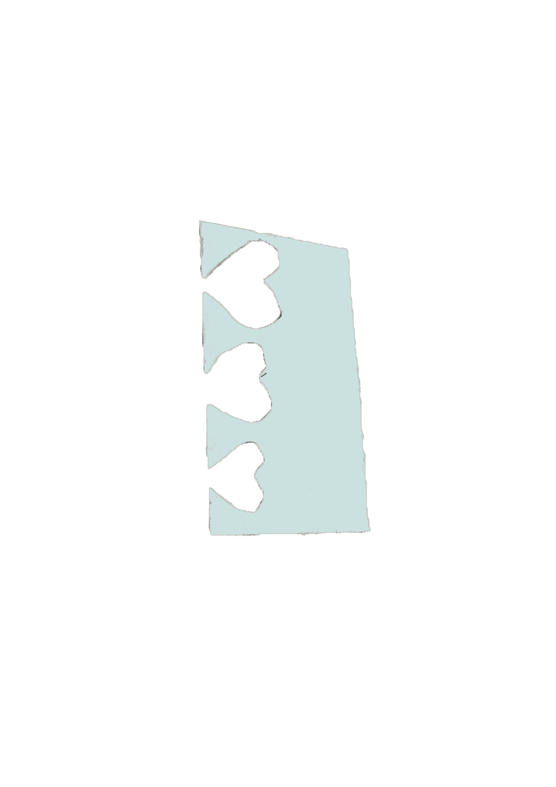
Carpenter Center for the Visual Arts, “Karel Martens: Monoprints,” accessed April 3, 2026, https://carpenter.center/exhibitions/karel-martens-monoprints. As he says about his monoprints, “I never have a fixed plan, only a beginning. I start printing something, and then it is asking me for something more.” What interests me about this way of working is the close attention he gives to materials and how they begin to inform the next decision. Rather than starting from a fully predetermined form, he works through response, experiment and revision.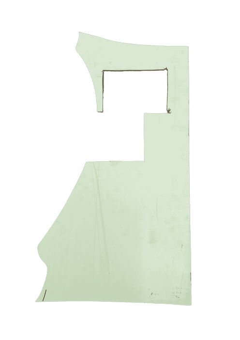
Chad Kloepfer and Willis Kingery, “Paperwork: An Interview with Karel Martens and the Martens and Martens Studio,” Harvard Graduate School of Design, April 17, 2025, https://www.gsd.harvard.edu/2025/04/interview-with-karel-martens/.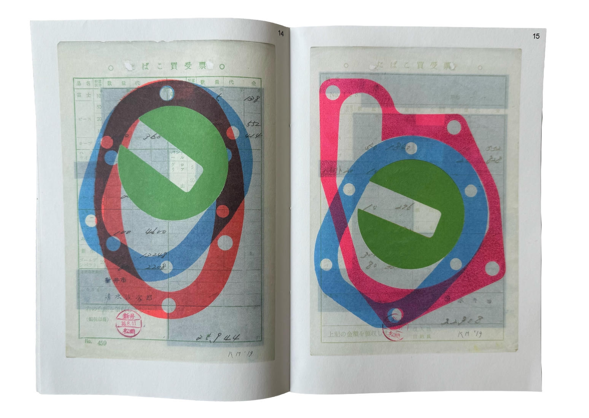
This led me to related positions such as bricolage, assemblage, patchwork and collage. All these forms share a common logic: the use of pre-existing elements and fragments. Of these, I kept returning to the concept of bricolage. Bricolage is a French term that roughly translates to “tinkerer or “handyman.” Its contemporary usage is traced to Claude Lévi-Strauss, and after he brought the word into anthropology in the 1960s, it was taken up more widely in other fields.
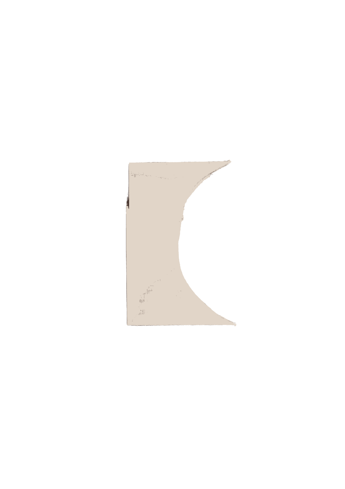
Annette N. Markham, “Bricolage,” in Keywords in Remix Studies, ed. Eduardo Navas, Owen Gallagher, and xtine burrough (London: Routledge, 2018), 43–44.In The Savage Mind, Lévi-Strauss introduces the figure of the bricoleur — stranded, as it were, on an island, working not with tools designed for the task, but with whatever is at hand. The bricoleur does not begin with a plan and then gather materials to fulfil it. Instead, he looks at what has accumulated, what was left behind by other processes, and asks: what can this become? Lévi-Strauss called this mode of thought la pensée sauvage — wild thinking.
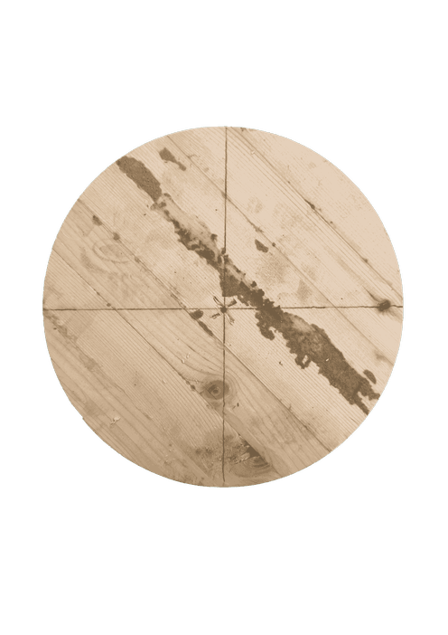
Claude Lévi-Strauss, The Savage Mind (Chicago: University of Chicago Press, 1966), 11.I found a similarity in the Design Research Group Refunc, which states that they give every material its next function. As they write:
An air duct becomes a house. A beer table becomes a floor. A silo becomes a home. […] asking one question about every material we find: What else can this be? The answer is always surprising. The circularity takes care of itself. Play more. Buy less. Refunc. “Home,” Accessed March 28, 2026, https://refunc.nl/.What draws me to their approach is not only the reassignment of function, but the way they work spatially with what already exists. Their materials are not neutral matter. They carry previous uses, associations, and contexts, and these are not erased but reworked. The transformation does not depend on making the object forget what it was, but on allowing its past to remain visible while placing it into a new relation. In that sense, their practice embodies a similar creative approach to unexpectedness and given limitations that I find in bricolage.
The act of making itself becomes central here, and this is where my research engages with Tim Ingold. In Making, he argues against the idea that making is simply the imposition of form onto passive matter. For Ingold, materials are active: they have qualities, tendencies, and histories of their own. To make something is to follow the material, to work with its grain rather than against it. He describes this as a correspondence between maker and material.
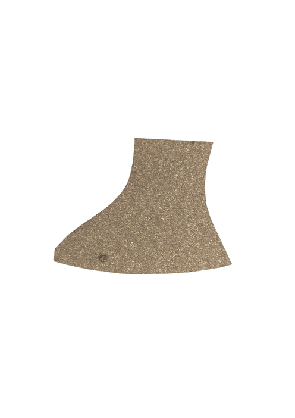
Tim Ingold, Making: Anthropology, Archaeology, Art and Architecture (London: Routledge, 2013), 11.What I take from Ingold is the idea that making can be understood as a process of response. In my own work, this correspondence becomes visible not through craft mastery but through selecting, placing, layering, and relating. I am less interested in mastering an object than in discovering how material can become legible through graphic and spatial arrangement.
This thinking connects directly back to Martens, who understands himself as a collaborator with his material and reframes my intended working with the offcuts of the wood workshop. It is not simply a leftover, but a material with its own logic, its own surface, its own trace of process. To work with it is to enter into a correspondence — a conversation.
This way of seeing also connects to my own background. Much of my childhood was spent in my parents’ workshop. I learned early that material has a limit: a piece of leather cut carelessly can become impossible to reuse. That formed how I think about what remains. It demonstrated to me that materials are not endlessly available and that what is set aside still carries value, even if it no longer fits its original purpose. I now recognise that this early familiarity with leftovers continues to inform how I look, select, and work.
At the same time, my own context complicates this openness. While reflecting on bricolage in relation to what I call the polished system, I began to notice that the wood workshop, as I encountered it, is largely structured around use, efficiency, and production. It often assumes that one arrives with an intended outcome, works within a limited timeframe, and moves toward a clear result. From that perspective, material that is full, stable, and easy to measure fits more readily into the workshop’s rhythm than an irregular offcut, which asks for time, interpretation, and uncertainty.
Together, these references point towards a practice that does not begin with a resolved outcome, but with attention to what is already there. In my case, this attention is directed towards the materials that the polished system leaves behind. In the wood workshop, that broader design logic becomes visible in the preference for predictable material and clear results, while irregular offcuts remain in uncertainty. It is within that uncertain state that my research takes shape.
4 • Analysis and Development
I find it more productive to move through given material rather than above it — to think with limitations rather than despite them. The wood workshop turned into, in a way, the field of research. Within it, there is a shared area where students place offcuts that may still be reused. It was this area that interested me most, because it holds material left over from one process but not yet incorporated into a new one. I do not see these pieces as failed material. They are only set aside because the process they came from has already moved on. What interests me is precisely this in-between condition: they are no longer part of their original purpose, yet still available for another reading or use.
Not every scrap becomes material. In the wood workshop, I slowly moved through the leftover area, returning several times and collecting over 150 pieces. I was not looking for anything particular. I was looking for something that looked back: a particular edge, an unexpected curve, a surface defined by use—a saw cut, a burn, a split along the grain. My criteria were not rational, but visual, tactile and intuitive. I picked up what I could not immediately explain.
Collecting and sorting, creating a selection, is the first act of this practice, and through the act of choosing, I was already interpreting. Selection is not neutral. The moment I pick up one piece and leave another behind, I begin to produce a hierarchy: between what becomes visible and what remains overlooked, between what appears interesting and what stays unread. In this sense, my role as a designer is not simply to document what is there, but to frame, isolate, and reorganise it. Sorting becomes a visual act that, through the interactions it produces, creates emphasis, rhythm, exclusion, and visibility.
This process has two registers. There is the analytical — I noted dimensions, documented surfaces, and photographed each piece in isolation. And there is the poetic — I asked what each piece suggested, what role it might play, what it seemed to want to become. Neither register is more valid than the other. Together, they form a method for working with attentiveness, slowness, and responsiveness. In this sense, the act of selection is already a form of correspondence — a first conversation with the material before anything has been made.
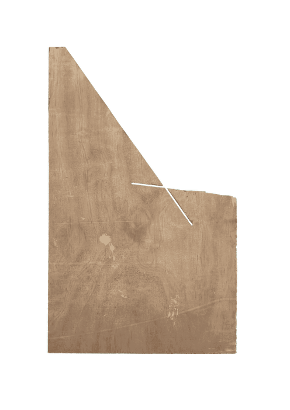
Tim Ingold, Making: Anthropology, Archaeology, Art and Architecture (London: Routledge, 2013), 11.In March 2026, I organised a workshop at KABK where I brought a selection of offcuts into a shared space and invited others to engage with them through arrangement, assigning roles, and finding configurations, not to build or solve, but to compose relations. The workshop extended this selection process into a collective setting. Here too, hierarchies emerged: participants paid attention to certain pieces over others, grouped some materials together, left gaps around others, and assigned roles based on what they noticed or valued. What became visible again was that selection is never neutral. Even in a shared exercise, visibility, emphasis, and function were produced through acts of choosing. These roles included surface (to hold or display), leg (vertical support), feet (stabilising base), connector (joining two or more elements), signal (drawing attention), direction (guiding movement), and ornament (decoration).
What emerged was unexpected. Different hands produced different logics. Some arranged by similarity — grouping pieces of similar size or texture. Others arranged by contrast — placing the smooth against the rough, the heavy against the light. Some left large gaps between pieces; others built dense accumulations. Each arrangement revealed something the material had not shown me alone.
Later in the workshop, books and printed images were incorporated into the arrangement. This changed the exercise. The offcuts are no longer only related to one another through shape, traces and spacing, but also to printed matter. Through this, the composition began to function less as a material grouping and more as a field of reading, in which some pieces acted like dividers, frames, or signs that directed attention.
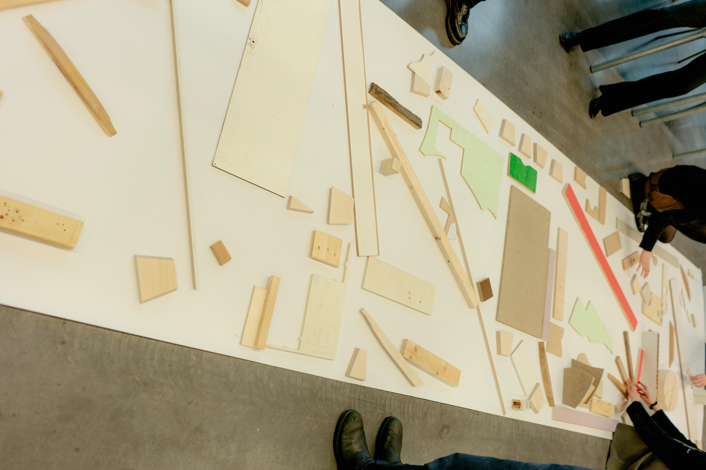
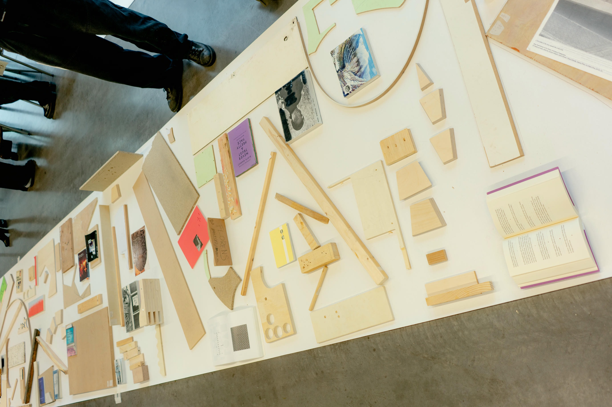
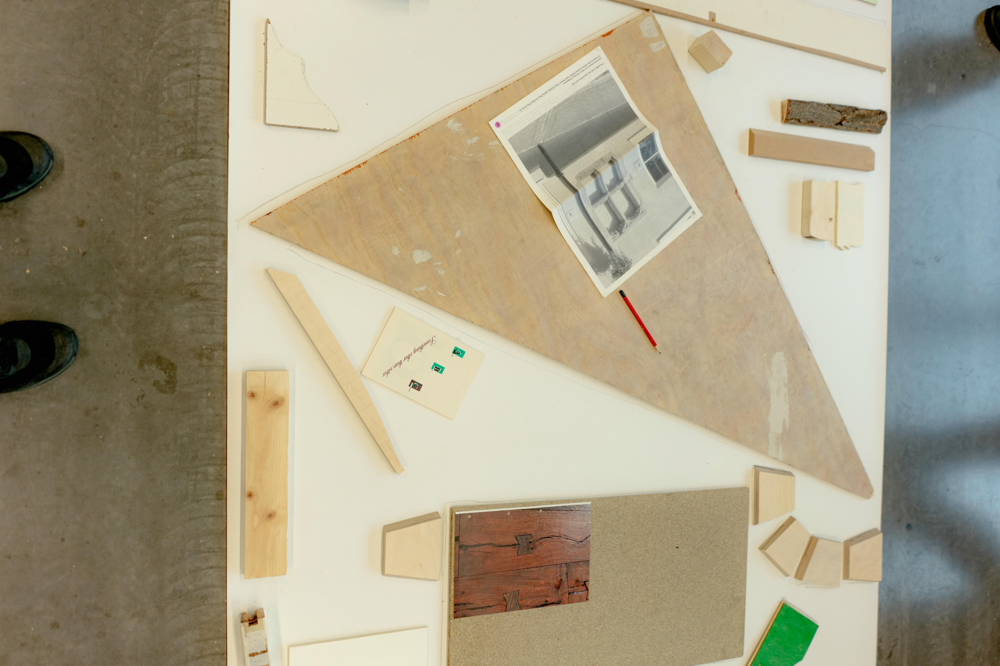
To translate these arrangements into a graphic register, I used tracing and frottage. Tracing functioned as a manual form of printing: it flattened the offcuts into two-dimensional contours and made them readable as graphic forms rather than only as pieces of wood, recalling Karel Martens’s way of letting found material enter the print process. Frottage brought back the logic of cropping that runs through this research. By choosing and rubbing only certain sections of an arrangement, I could isolate a fragment, frame a relation or focus on details that could otherwise remain unnoticed.
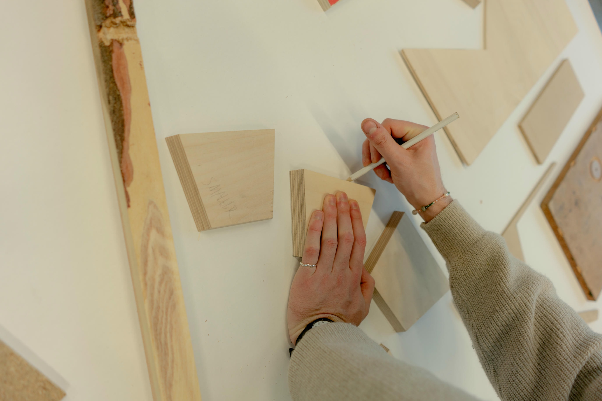
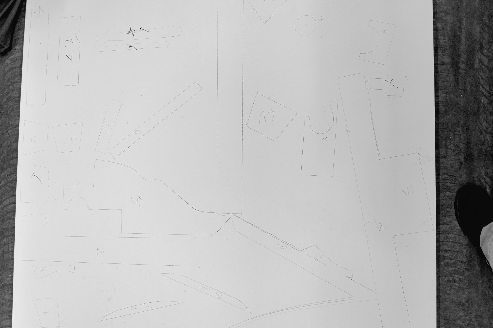
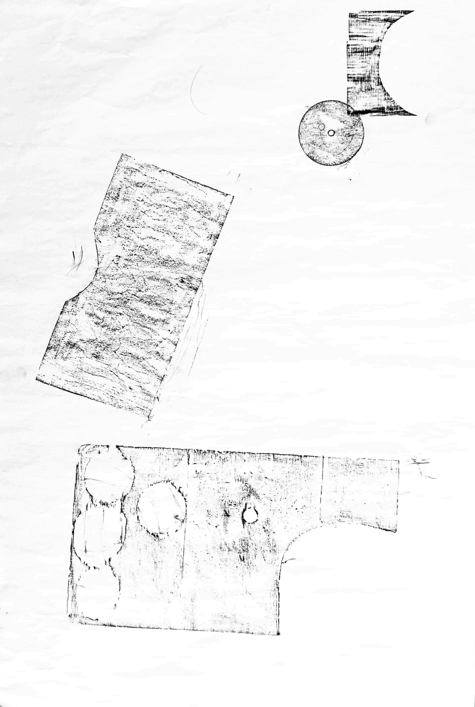
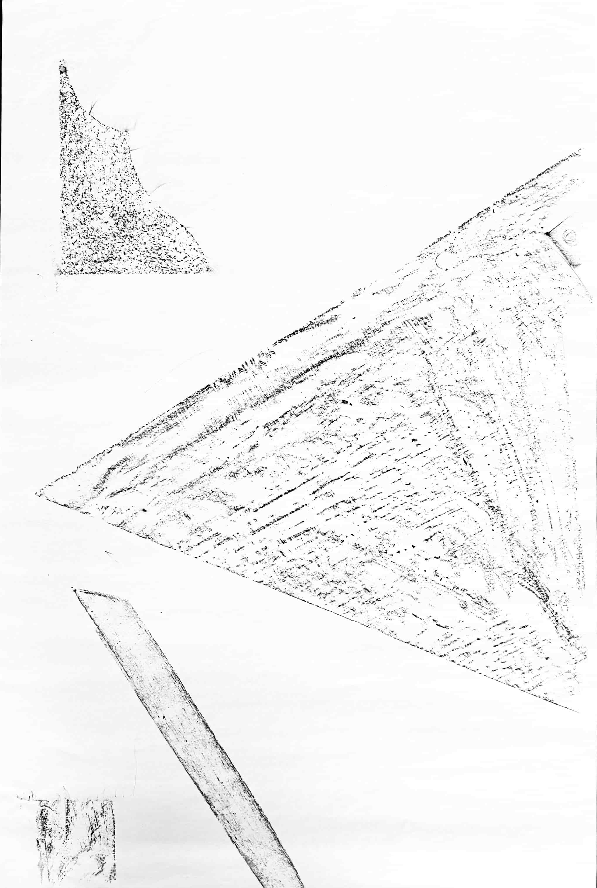
The workshop made it even clearer that the leftovers do not have a fixed meaning. They are relational. Their graphic potential is activated through the decision to place one thing next to another, to leave a gap or to rotate a piece. Not through transformation or manipulation, but through attention, selection, and deliberate placement, the remains became visually legible in a different way.
5 • Discussion and Reflection
During the research, a question began to emerge: whether leftover materials possess an inherent creative potential, or whether this potential is something the creator bestows upon them. What became clear is that it lies in neither alone. The creative act emerges in the correspondence between the two: the material offers something, and the maker responds.
The workshop made this visible in a way that individual practice could not. Inviting others to work with the offcuts revealed both shared and other ways of seeing. Many participants paused, hesitated, and rearranged, which suggested that the remains invited a particular kind of slowness. At the same time, different hands produced different logics: where I often worked through contrast and tension, others sought proximity and similarity. The material did not produce one meaning, but many.
This leads to a question that remained with me throughout the process: when does a remain stop being a remain and become material? I would argue that this happens when its potential is recognised. That recognition does not belong entirely to the object or to the gaze, but arises in the relation between them. The remainder becomes material when it is attended to, selected, and brought into use.
Within the polished system lies a paradox: it produces the remain, and without standardisation, there would be no offcut. To work with leftover materials is therefore not to work against the system, but to think alongside it: to recognise what it excludes, and to ask what those exclusions still carry. As Irénée Scalbert explains, Lévi-Strauss contrasts the engineer, who begins from abstract concepts and imposes them onto reality, with the bricoleur, who works by reading the signs already present in the world around him.
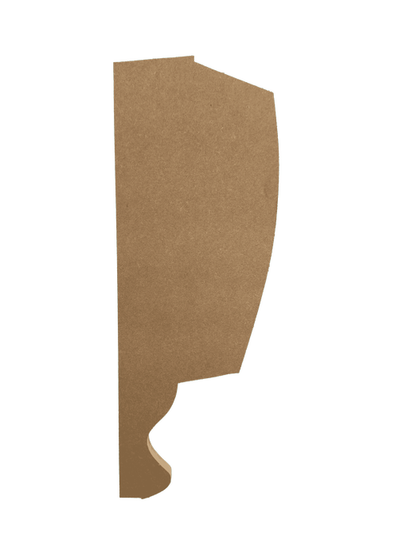
Irénée Scalbert, “The Architect as Bricoleur,” Candide: Journal for Architectural Knowledge 4 (July 2011), 73. This research does not oppose the polished system — it reads what the system leaves behind.What also became clearer to me was that narration had not disappeared from the work, but had changed its form. Earlier, I was interested in fragments as carriers of traces, almost as if each piece could be read like an image holding a small story of its own. In the workshop, this shifted from the individual fragment to the arrangement itself. Meaning emerged through proximity, contrast, rhythm, interruption and direction. Narration became less linear and more spatial.
Thinking about my own method, I also recognise its limits. My selection process, which I described as intuitive, was not entirely free. I was drawn to aesthetically compelling leftovers — pieces already marked by another hand or shaped by a visible process. In that sense, my choices were still guided by existing preferences. This made me realise that intuition is not outside judgment, but affected by it. What I take from this process is not a fixed method, but an attitude. Working outside the screen, with hands, surfaces, and resistant material, has changed how I approach design. I now approach limitation not simply as a restriction, but as a condition that sharpens attention and opens possibilities. The offcuts showed me that graphic potential does not need to begin with new material. It can begin with what is already there, to activate it and read it differently.
6 • Conclusion
This research began with a scrap of wood and ended in a different way of looking at what the polished system leaves behind.
The offcut is not a failure of a process, but its by-product. It carries texture, edges, and traces of previous decisions. When selected with attention and placed in relation to other pieces, it reveals a graphic quality that planned materials cannot produce. Not because they are special, but because they are specific.
What this research has shown is that creative potential does not lie solely in the material or in the maker. It is activated through selection, arrangement and attention. Making, in this sense, is not the execution of a plan, but a negotiation with what is already there.
This has changed how I see ways of designing, so that it is no longer only the production of new forms, but also the reading and activation of what already exists in my surroundings. Working with offcuts has taught me that limitation can sharpen attention and open unexpected possibilities. Stepping outside the screen and working with my hands has given me a different way of thinking, one that begins with attention rather than control.
The remains were always there. What changed was my way of seeing them, and with that, my way of designing.
7 • Bibliography
- Ingold, Tim. Making: Anthropology, Archaeology, Art and Architecture. London: Routledge, 2013. Colomina, Beatriz, and Mark Wigley. Are We Human? Notes on an Archaeology of Design. Zürich: Lars Müller Publishers, 2016. Carpenter Center for the Visual Arts. “Karel Martens: Monoprints.” Accessed April 3, 2026. https://carpenter.center/exhibitions/karel-martens-monoprints. Kloepfer, Chad, and Willis Kingery. “Paperwork: An Interview with Karel Martens and the Martens and Martens Studio.” Harvard Graduate School of Design. April 17, 2025. https://www.gsd.harvard.edu/2025/04/interview-with-karel-martens/. Martens, Karel. Tokyo Papers. Amsterdam: Roma Publications, 2020. Lévi-Strauss, Claude. The Savage Mind. Chicago: University of Chicago Press, 1966. Markham, Annette N. “Bricolage,” in Keywords in Remix Studies, ed. Eduardo Navas, Owen Gallagher, and xtine burrough (London: Routledge, 2018). Refunc. “Home.” Accessed March 28, 2026, https://refunc.nl/. Scalbert, Irénée. “The Architect as Bricoleur.” Candide: Journal for Architectural Knowledge 4 (July 2011).
This project grew out of many conversations, shared references, and would not have been possible without the support of many people around me. I would like to thank all participants in the workshop for their time, openness, and engagement. Thank you to Barbara, my supervisor for the research essay, for her valuable feedback and help throughout the process. Thank you to my sister for her support, and to my peers and teachers for their tremendous help and encouragement during this entire process.